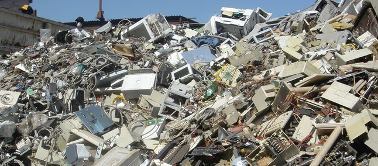
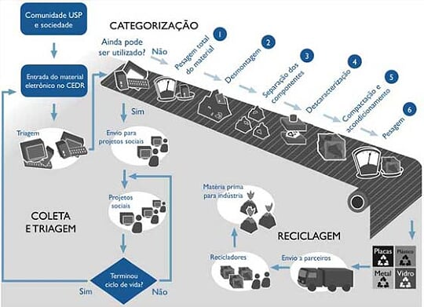

O que é lixo eletrônico?
Lixo eletrônico é todo resíduo material produzido pelo descarte de equipamentos eletrônicos. Com o elevado uso desses equipamentos no mundo moderno, esse tipo de lixo se tornou um problema ambiental quando não é descartado em locais adequados.
Exemplos de lixo eletrônico
- Monitores de computadores;
- Telefones celulares e baterias;
- Computadores;
- Televisores;
- Câmeras fotográficas;
- Impressoras.
Problemas causados pelo descarte inadequado

O descarte ocorre quando um equipamento apresenta defeito ou se torna obsoleto (ultrapassado). O problema aparece quando esse material é abandonado no meio ambiente. Alguns equipamentos possuem substâncias químicas, como chumbo, cádmio, mercúrio e berílio, que podem provocar a contaminação do solo e da água.
Além dos danos ambientais, o contato inadequado com esses resíduos pode causar problemas à saúde. Esses equipamentos também contêm plástico, metais e vidro, materiais que podem levar muito tempo para se decompor no solo.
Onde descartar? Descarte correto e reutilização
Para evitar a contaminação e a poluição do meio ambiente, o correto é encaminhar o lixo eletrônico a locais apropriados, como empresas e cooperativas que atuam na área de reciclagem.
Celulares e baterias podem ser entregues em pontos de coleta disponibilizados por empresas de telefonia e pelo comércio. Outra opção é doar equipamentos em boas condições, mas que não estão mais em uso, para entidades sociais que atuam na área de inclusão digital.
Lembre-se
O primeiro passo para evitar a poluição do meio ambiente é fazer a coleta seletiva em casas, escolas e empresas. O lixo eletrônico deve ser separado dos resíduos orgânicos e dos materiais recicláveis comuns, como papel, plástico, vidro e metal, e encaminhado a um ponto de recebimento adequado.
Você sabia?
O lixo eletrônico é um desafio mundial, e sua geração aumenta com o consumo e a substituição frequente de equipamentos.
- Computadores, tablets e monitores;
- Teclados e impressoras;
- Câmeras fotográficas e aparelhos de som;
- Lâmpadas eletrônicas e televisores;
- Geladeiras, fogões e micro-ondas;
- Rádios, telefones e celulares;
- Carregadores, baterias, pilhas e fios.
Fonte mencionada no material original: PNUMA — Programa das Nações Unidas para o Meio Ambiente.
Lixo eletrônico e o meio ambiente
O lixo eletrônico pode conter materiais como cobre, alumínio e metais pesados, entre eles mercúrio, cádmio, berílio e chumbo. Quando descartados de forma inadequada, esses componentes podem contaminar o solo e os lençóis freáticos, comprometendo o equilíbrio ecológico.
Além de poluir o ambiente, o contato inadequado com esses resíduos pode trazer riscos à saúde dos animais e dos seres humanos.
Reciclagem de lixo eletrônico
A reciclagem permite recuperar materiais presentes nos equipamentos descartados e reduzir a necessidade de extração de novas matérias-primas. Esse processo deve ser realizado por serviços preparados para lidar com os componentes e resíduos de maneira segura.
Com a globalização e o avanço da tecnologia, novos aparelhos são lançados em intervalos cada vez menores. Isso pode incentivar a troca de equipamentos que ainda funcionam e aumentar a quantidade de resíduos produzidos.
Por isso, antes de descartar um aparelho, vale considerar o conserto, a reutilização ou a doação. Quando não houver possibilidade de reaproveitamento, o caminho adequado é a reciclagem especializada.
Coleta e descarte do lixo eletrônico

Algumas empresas, fabricantes, lojas e iniciativas de reciclagem oferecem pontos de recebimento para equipamentos usados. Esses locais encaminham os materiais para processos de reaproveitamento ou destinação ambientalmente adequada.
Antes de levar um aparelho, consulte as orientações do ponto de coleta para saber quais tipos de equipamentos são aceitos.
Lixo eletrônico no Brasil
O aumento da comercialização e da utilização de produtos eletrônicos também amplia o desafio de gerenciar os resíduos no Brasil. A destinação correta depende da participação de fabricantes, comerciantes, consumidores e serviços de coleta e reciclagem.
A Lei Estadual nº 13.576, de 6 de julho de 2009, de São Paulo, estabelece normas e procedimentos para a reciclagem, o gerenciamento e a destinação final do lixo tecnológico. O material original destaca a responsabilidade compartilhada entre empresas que produzem, comercializam ou importam esses produtos.
Campanhas de conscientização e a ampliação dos pontos de coleta ajudam a informar a população sobre a separação e o descarte adequado desses materiais.
Consequências e possíveis soluções
O descarte incorreto de resíduos eletrônicos pode causar impactos ao meio ambiente e à saúde. Uma das principais soluções é encaminhar os equipamentos a empresas, cooperativas ou pontos de coleta preparados para receber esses materiais.
Também é importante prolongar a vida útil dos aparelhos, consertar quando possível e doar equipamentos que ainda estejam funcionando. Essas atitudes ajudam a reduzir o volume de resíduos e favorecem o reaproveitamento de materiais.
↑ Voltar ao início